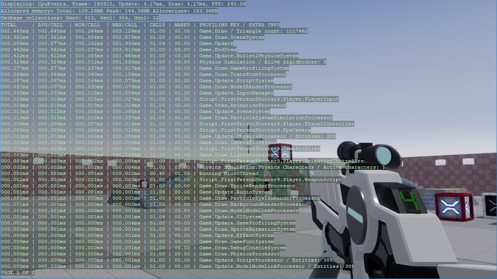

Profiling
Warning
Приносим свои извинения за неудобства. Для этой страницы нет перевода на русский язык. Она будет отображаться на английском языке.
Beginner Programmer
You can profile your project to check its runtime performance and find problems. Use the Stride Game Profiler script or an external profiling tool such as the Performance Profiler in Visual Studio.
Profile with the Stride Game Profiler script
The Game Profiler script shows how performance costs change at runtime. This helps isolate bottlenecks and find their cause.

To use the script:
In the Asset View, click
 and select Scripts > Game Profiler.
and select Scripts > Game Profiler.
The New script dialog opens. Leave the default information and click Create script.
Game Studio adds the GameProfiler script to your project.
Add the script to an entity. For instructions, see Use scripts.
Select the entity that contains the GameProfiler.
In the Property Grid (on the right by default), enable the Game Profiler component.
Tip
You can also enable and disable the profiler at runtime with Left Ctrl + Left Shift + P.
Run the game.
The Game Profiler shows profiling results as your game runs.
Note
Game Profiler disables VSync. This gives you the true profiling values, ignoring sync time.
Game Profiler properties
To change the Game Profiler properties, select the GameProfiler entity and use the Property Grid.

| Property | Description |
|---|---|
| Filter | The kind of information the profiler displays (FPS only, CPU, or GPU). At runtime, change with F1. |
| Sort by | Sort the result pages by: Name: the profile key (the thing being profiled) Time: the key that uses the most time At runtime, toggle with F2. |
| Refresh interval (ms) | How frequently the profiler gets and displays new results. At runtime, control with - / +. |
| Display page | The results page displayed. At runtime, jump to a page with the number keys, or move forward and backwards with F3 and F4. |
| Text color | The color of the profiler text |
| Priority | See Scheduling and priorities |
Understanding the Game Profiler results
The top row displays information about basic performance.
Displaying: the kind of information the profiler displays (FPS only, CPU, or GPU)Frame: the current frameUpdate: the average time (ms) taken to update the game since the profiler last refreshedDraw: the average time (ms) taken to render the frame since the profiler last refreshedFPS: the average number of frames rendered per second
If you select CPU as the display mode, the profiler displays:
Total: the amount of memory currently usedPeak: the peak memory use since the game startedAllocations: the amount of memory allocated or freed since the profiler last refreshedGen0,Gen1,Gen1: the number of garbage collections per each generation of object (Gen0is the most recent generation)
If you select GPU as the display mode, the profiler displays:

Device: the graphics device (manufacturer's description)Platform: the currently used backend (eg DirectX, OpenGL, Vulkan, etc)Profile: the feature level for your game, set in Game Settings > Rendering (see Game settings)Resolution: the game resolutionDrawn triangles: the number of triangles drawn per frameDraw calls: the number of draw calls per frameBuffer memory: the amount of memory allocated to buffersTexture memory: the amount of memory allocated to textures
In the GPU and CPU modes, the profiler displays information about the parts of the code being profiled, including active scripts.
Note
Each value describes the events per frame since the last profiler refresh.
| Column | Description |
|---|---|
TOTAL |
The total time taken to execute the code in one frame |
AVG/CALL |
Average time taken to execute a single call of the code |
MIN/CALL |
The shortest amount of time taken to execute a single call of the code |
MAX/CALL |
The longest amount of time taken to execute a single call of the code |
CALLS |
The number of times the code was executed in one frame |
MARKS |
The number of times per frame marked code is executed. This column is only displayed if marked code is executed |
PROFILE KEY / EXTRA INFO |
The part of the code (such as a function or script) being profiled. This column also displays additional information, such as the number of entities affected. |
Game Profiler runtime controls
You can change the Game Profiler settings at runtime using keyboard shortcuts.
| Action | Control |
|---|---|
| Left Ctrl + Left Shift + P | Enable/disable the profiler |
| F1 | Toggle between CPU, GPU, and FPS-only results |
| F2 | Toggle between sorting by profile key and time |
- / + | Slow down / speed up the refresh time F3 / F4 | Page back / page forward Number keys | Jump to a page
Use the Game Profiler in code
Enable profiling:
GameProfiler.EnableProfiling();Enable profiling only for the profiler keys you specify:
GameProfiler.EnableProfiling(true, {mykey1,mykey2});Enable the profiling except for the profiler keys you specify:
GameProfiler.EnableProfiling(false, {mykey1,mykey2});To access the prolifing key of a script, use ProfilingKey.
Use external profiling tools
Instead of using the Stride Game Profiler, you can use external profiling tools to profile your project.
| Profiler | Type | Platforms |
|---|---|---|
| Visual Studio profiler | Visual Studio feature | Desktop and mobile |
| Xamarin Profiler | Standalone tool distributed with Xamarin Studio | Mobile |
| RenderDoc | Standalone | Desktop and mobile |
Use the Visual Studio profiler
Visual Studio has powerful in-built profiling tools that can identify common performance issues.
In Visual Studio, open your project solution (
.sln) file.To open the profiler, press Alt + F2, or in the task bar click Analyze > Performance Profiler.

In the Profiler window, select the profiling tools you want to run.

You can run multiple profiling tools at once.
To launch the profiler, in the Performance Profiler tab, at the bottom, click Start.

Visual Studio runs your application and begins profiling.
For more information about the Visual Studio profiler, see the MSDN documentation.
Use RenderDoc
RenderDoc is a free MIT licensed stand-alone graphics debugger that allows quick and easy single-frame capture and detailed introspection of any application using Vulkan, D3D11, OpenGL & OpenGL ES or D3D12 across Windows 7 - 10, Linux, Android, or Nintendo Switch™.
Download RenderDoc.
Optional: This step is optional and only necessary if you want to have render pass markers with name following the Graphics Compositor:
2.1. In your executable project (Windows), locate
game.Run();and insert the following code just before:game.GraphicsDeviceManager.DeviceCreationFlags |= DeviceCreationFlags.Debug;Note
If you have a
SharpDXExceptionof typeDXGI_ERROR_SDK_COMPONENT_MISSING, please follow the instructions from https://docs.microsoft.com/en-us/windows/uwp/gaming/use-the-directx-runtime-and-visual-studio-graphics-diagnostic-features2.2. Also, make sure profiler is enabled by calling this code from any of your game script:
GameProfiler.EnableProfiling();Optional: Add a package reference to
Stride.Graphics.RenderDocPlugin.You can then use the @'Stride.Graphics.RenderDocManager' class to trigger captures:
var renderDocManager = new RenderDocManager(); renderDocManager.StartCapture(GraphicsDevice, IntPtr.Zero); // Some rendering code... renderDocManager.EndFrameCapture(GraphicsDevice, IntPtr.Zero);
Common bottlenecks
As CPU and GPU process different types of data, it's usually easy to identify which part is causing a bottleneck.
Most GPU problems arise when the application uses expensive rendering techniques, such as post effects, lighting, shadows, and tessellation. To identify the problem, disable rendering features.
If instead there seems to be a CPU bottleneck, reduce the complexity of the scene.
For graphics:
- decrease the resolution of your game
- reduce the quality of your post effects
- reduce the number of lights and size of shadow maps
- reduce shadow map sizes
- use culling techniques to reduce the number of objects and vertices rendered
For textures:
- use compressed textures on slower devices
- use sprite sheets, not individual images
- use texture atlases, not separate textures